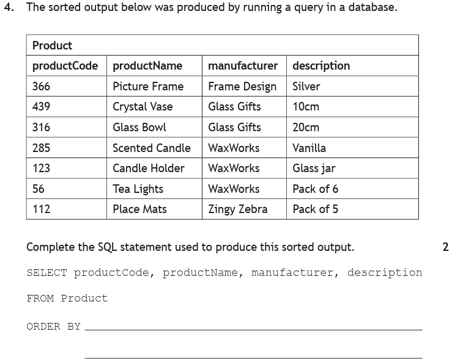
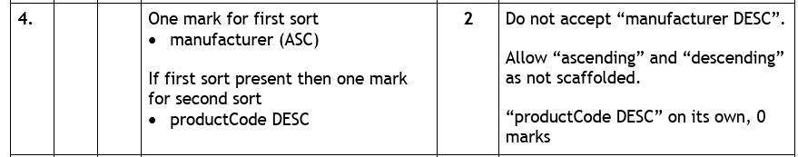

Introduction
A database is only useful if you can get things out of it. On the introduction page you saw that almost everything people do with an app comes down to searching, sorting and filtering. A query is how you ask for exactly that.
A query is a question you ask a database. You state which information you want and which conditions it has to meet, and the database hands back only the records that qualify. Every search box, every "sort by price", every "filter: in stock" is a query running behind the glass.
The language for writing queries is SQL — Structured Query Language — and the query that asks questions is the SELECT query. A SELECT query never changes the data. It only looks, and it lets you do three things at once:
- Choose the fields you want to see, instead of the whole table.
- Choose the records you want, by setting a search condition.
- Choose the order they come back in.
This page deals with single-table queries — everything comes from one table. Pulling data from two tables at once is a join, and that has a page of its own.
Key Terms
house = "Curie".The Database We Will Use
Every example on this page runs against the school database you built on the design page — one club has many pupils, linked by clubID.
| pupilID | pupilName | dateOfBirth | yearGroup | house | meritPoints | clubID |
|---|---|---|---|---|---|---|
| P101 | Archie | 14/03/2010 | 4 | Churchill | 42 | C01 |
| P102 | Noah | 02/11/2009 | 5 | Curie | 18 | C03 |
| P103 | Mason | 27/06/2010 | 4 | Montgomerie | 55 | C01 |
| P104 | Christian | 09/01/2008 | 6 | Nightingale | 31 | C02 |
| P105 | Leoni | 18/09/2010 | 4 | Curie | 67 | C04 |
| P106 | Lucienne | 30/04/2009 | 5 | Churchill | 24 | C03 |
| P107 | Erika | 12/12/2011 | 3 | Montgomerie | 49 | C04 |
| P108 | Louie | 05/07/2009 | 5 | Nightingale | 12 | C01 |
| P109 | Matthew | 21/02/2011 | 3 | Curie | 38 | C02 |
| P110 | Riley | 08/05/2010 | 4 | Churchill | 71 | C04 |
| P111 | Harveer | 16/10/2008 | 6 | Nightingale | 26 | C03 |
| clubID | clubName | meetingDay | meetingTime | staffLead | equipmentProvided |
|---|---|---|---|---|---|
| C01 | Chess Club | Monday | 15:30 | Mr Anderson | TRUE |
| C02 | Debating | Tuesday | 13:05 | Ms Hendry | FALSE |
| C03 | Film Making | Thursday | 15:30 | Mrs Kaur | TRUE |
| C04 | Athletics | Wednesday | 16:00 | Miss Lawson | FALSE |
Anatomy of a Query
A SELECT query is built from four clauses, always written in this order:
SELECT pupilName, house FROM Pupil WHERE house = "Curie" ORDER BY meritPoints DESC;
| Clause | What it does | Needed? |
|---|---|---|
SELECT | Lists the fields to display — these become the column headings of the result. | Always |
FROM | Names the table the data comes from. | Always |
WHERE | Sets the search criteria — the condition a record must meet to be included. | Optional |
ORDER BY | Sets the sort order of the results. | Optional |
Leave out WHERE and you get every record. Leave out ORDER BY and the records come back in whatever order the table holds them.
Design first, then write
Before writing a single word of SQL, plan the query as a query design — four questions, in the same order as the four clauses. Answer those and the SQL almost writes itself, because each line of the design becomes one clause:
Every example below follows the same three stages: design it, write it, check the output. Get into that habit now and the exam questions that ask you to design a query become free marks.
SELECT and FROM
SELECT lists the fields you want to see, separated by commas, and FROM names the table they live in. Between them they are the smallest query you can write — no conditions, no sorting, just "show me these columns from this table".
The fields appear in the output in the order you list them, not the order they sit in the table.
1 · Design
| Field(s) | pupilName, house |
|---|---|
| Table(s) | Pupil |
| Search criteria | none — every pupil is wanted |
| Sort order | none |
2 · SQL
SELECT pupilName, house FROM Pupil;
3 · Output
| pupilName | house |
|---|---|
| Archie | Churchill |
| Noah | Curie |
| Mason | Montgomerie |
| Christian | Nightingale |
| Leoni | Curie |
| Lucienne | Churchill |
| Erika | Montgomerie |
| Louie | Nightingale |
| Matthew | Curie |
| Riley | Churchill |
| Harveer | Nightingale |
All 11 records come back, because there is no WHERE to cut any of them out — but only 2 of the 7 columns are shown, because only two were listed after SELECT.
Showing every field with *
To display all the fields, use the asterisk wildcard instead of listing them:
SELECT * FROM Club;
That returns the Club table exactly as it appears above — all six fields, all four records.
SELECT pupilName, house, never SELECT pupilName, house,. And the table name is singular: our table is Pupil, not Pupils. Copy it exactly as the question prints it.WHERE — Search Criteria
WHERE is the filter. It sets the search criteria: a condition that each record is tested against. Records that pass are included; records that fail are dropped. Nothing is deleted — they simply do not appear in the result.
The comparison operators
A condition is built from a field, an operator and a value:
| Operator | Means | Example |
|---|---|---|
= | equal to | house = "Curie" |
!= | not equal to | house != "Curie" |
> | greater than | meritPoints > 50 |
< | less than | meritPoints < 20 |
>= | greater than or equal to | yearGroup >= 5 |
<= | less than or equal to | yearGroup <= 4 |
house = "Curie" needs the double quotes because Curie is text. meritPoints > 50 must not have them, because 50 is a number. Watch out for fields that look numeric but are Text — pupilID = "P101" and clubID = "C01" both need quotes, because those are Text attributes.1 · Design
| Field(s) | pupilID, pupilName |
|---|---|
| Table(s) | Pupil |
| Search criteria | house = "Curie" |
| Sort order | none |
2 · SQL
SELECT pupilID, pupilName FROM Pupil WHERE house = "Curie";
3 · Output
| pupilID | pupilName |
|---|---|
| P102 | Noah |
| P105 | Leoni |
| P109 | Matthew |
Three of the eleven records pass the test. Notice that house does not appear in the output — you can search on a field without displaying it.
1 · Design
| Field(s) | pupilName, meritPoints |
|---|---|
| Table(s) | Pupil |
| Search criteria | meritPoints > 50 |
| Sort order | none |
2 · SQL
SELECT pupilName, meritPoints FROM Pupil WHERE meritPoints > 50;
3 · Output
| pupilName | meritPoints |
|---|---|
| Mason | 55 |
| Leoni | 67 |
| Riley | 71 |
Watch the boundary. > 50 means more than 50, so a pupil on exactly 50 would be left out. If the question says "50 or more", you need >= 50.
1 · Design
| Field(s) | pupilName, house |
|---|---|
| Table(s) | Pupil |
| Search criteria | house != "Churchill" |
| Sort order | none |
2 · SQL
SELECT pupilName, house FROM Pupil WHERE house != "Churchill";
3 · Output
| pupilName | house |
|---|---|
| Noah | Curie |
| Mason | Montgomerie |
| Christian | Nightingale |
| Leoni | Curie |
| Erika | Montgomerie |
| Louie | Nightingale |
| Matthew | Curie |
| Harveer | Nightingale |
Eight records — everyone except the three Churchill pupils. != is often the shortest way to write "everyone apart from…".
Complex Search Criteria — AND and OR
A simple condition tests one thing. A complex condition joins two or more together with AND or OR, and the difference between them decides how many records come back:
AND— a record must satisfy every condition. Each extra AND makes the result smaller.OR— a record only has to satisfy one condition. Each extra OR makes the result bigger.
1 · Design
| Field(s) | pupilName, yearGroup, house |
|---|---|
| Table(s) | Pupil |
| Search criteria | yearGroup = 4 AND house = "Churchill" |
| Sort order | none |
2 · SQL
SELECT pupilName, yearGroup, house FROM Pupil WHERE yearGroup = 4 AND house = "Churchill";
3 · Output
| pupilName | yearGroup | house |
|---|---|---|
| Archie | 4 | Churchill |
| Riley | 4 | Churchill |
Four pupils are in S4 and three are in Churchill, but only two are both. Mason is S4 but Montgomerie; Lucienne is Churchill but S5. Neither survives an AND.
1 · Design
| Field(s) | pupilName, house |
|---|---|
| Table(s) | Pupil |
| Search criteria | house = "Curie" OR house = "Nightingale" |
| Sort order | none |
2 · SQL
SELECT pupilName, house FROM Pupil WHERE house = "Curie" OR house = "Nightingale";
3 · Output
| pupilName | house |
|---|---|
| Noah | Curie |
| Christian | Nightingale |
| Leoni | Curie |
| Louie | Nightingale |
| Matthew | Curie |
| Harveer | Nightingale |
AND — and get nothing back, because no pupil is in two houses at once. When two conditions test the same field for different values, the answer is almost always OR. Ask yourself whether one record could possibly satisfy both; if it cannot, AND is wrong.To find values between two limits, you need two conditions on the same field joined by AND — one for the lower limit and one for the upper.
1 · Design
| Field(s) | pupilName, meritPoints |
|---|---|
| Table(s) | Pupil |
| Search criteria | meritPoints >= 20 AND meritPoints <= 50 |
| Sort order | none |
2 · SQL
SELECT pupilName, meritPoints FROM Pupil WHERE meritPoints >= 20 AND meritPoints <= 50;
3 · Output
| pupilName | meritPoints |
|---|---|
| Archie | 42 |
| Christian | 31 |
| Lucienne | 24 |
| Erika | 49 |
| Matthew | 38 |
| Harveer | 26 |
This is the one case where AND on the same field is right — because a single value can be both "at least 20" and "at most 50" at the same time. Note the field name has to be repeated: meritPoints >= 20 AND meritPoints <= 50, never meritPoints >= 20 AND <= 50.
1 · Design
| Field(s) | pupilName, meritPoints |
|---|---|
| Table(s) | Pupil |
| Search criteria | house = "Curie" AND meritPoints > 30 |
| Sort order | none |
2 · SQL
SELECT pupilName, meritPoints FROM Pupil WHERE house = "Curie" AND meritPoints > 30;
3 · Output
| pupilName | meritPoints |
|---|---|
| Leoni | 67 |
| Matthew | 38 |
Three pupils are in Curie, but Noah's 18 merit points fail the second test, so only two records survive.
The head of Curie house asks for a list she can pin on her wall:
"Can I get the name and merit points of everyone in my house who has more than 30 merit points, with the highest scorer at the top?"
Complete a query design for this, then write the SQL.
How to tackle it: we do not start writing SQL. We take the sentence apart into the four design rows, in order, because each one becomes a clause.
Field(s) — the words to look for are "get the … of". She asks for "the name and merit points", so that is pupilName, meritPoints. She does not ask for the house, even though the house is mentioned — it is a condition, not something to display.
Table(s) — everything named lives in Pupil. The Club table is irrelevant here, however prominently it is printed in the question.
Search criteria — there are two conditions hiding in that sentence. "in my house" gives house = "Curie", and "more than 30 merit points" gives meritPoints > 30. Both must be true of the same pupil, so they are joined with AND.
Sort order — "highest scorer at the top" means merit points, largest first, which is descending.
Watch the trap: "more than 30" is > 30, not >= 30. If a pupil sat on exactly 30 they would be excluded, and the marker will have chosen the data to catch that.
So the design is:
| Field(s) | pupilName, meritPoints |
|---|---|
| Table(s) | Pupil |
| Search criteria | house = "Curie" AND meritPoints > 30 |
| Sort order | meritPoints, descending |
And it converts to SQL a line at a time:
SELECT pupilName, meritPoints FROM Pupil WHERE house = "Curie" AND meritPoints > 30 ORDER BY meritPoints DESC;
Which produces:
| pupilName | meritPoints |
|---|---|
| Leoni | 67 |
| Matthew | 38 |
1 mark for the correct fields and table · 1 mark for house = "Curie" · 1 mark for meritPoints > 30 joined with AND · 1 mark for meritPoints descending.
ORDER BY — Sort Order
ORDER BY decides the order the results are listed in. It names the field to sort on, followed by the direction:
ASC— ascending: A→Z for text, smallest→largest for numbers, oldest→newest for dates.DESC— descending: Z→A, largest→smallest, newest→oldest.
Sorting happens last, after the WHERE has already thrown records away — so you are only ever sorting the records that survived.
1 · Design
| Field(s) | pupilName, meritPoints |
|---|---|
| Table(s) | Pupil |
| Search criteria | none |
| Sort order | meritPoints, descending |
2 · SQL
SELECT pupilName, meritPoints FROM Pupil ORDER BY meritPoints DESC;
3 · Output
| pupilName | meritPoints |
|---|---|
| Riley | 71 |
| Leoni | 67 |
| Mason | 55 |
| Erika | 49 |
| Archie | 42 |
| Matthew | 38 |
| Christian | 31 |
| Harveer | 26 |
| Lucienne | 24 |
| Noah | 18 |
| Louie | 12 |
All eleven records are still here — there is no WHERE. Only the order has changed.
1 · Design
| Field(s) | pupilName, yearGroup |
|---|---|
| Table(s) | Pupil |
| Search criteria | yearGroup <= 4 |
| Sort order | pupilName, ascending |
2 · SQL
SELECT pupilName, yearGroup FROM Pupil WHERE yearGroup <= 4 ORDER BY pupilName ASC;
3 · Output
| pupilName | yearGroup |
|---|---|
| Archie | 4 |
| Erika | 3 |
| Leoni | 4 |
| Mason | 4 |
| Matthew | 3 |
| Riley | 4 |
Six pupils are in S3 or S4, and they come back in alphabetical order by name. Note that the year groups are not in order — the sort was on the name, not the year.
ASC. Write it anyway — an examiner cannot give you a mark for a direction you did not put on the page, and it costs three letters.Complex Sorts
A simple sort orders on one field. A complex sort orders on two, separated by a comma:
ORDER BY firstField ASC, secondField DESC;
The first field is the main sort. The second only comes into play within a group where the first field is tied — it decides the order of the records that would otherwise be level. Each field gets its own direction, and they do not have to match.
1 · Design
| Field(s) | pupilName, yearGroup, house, meritPoints, clubID |
|---|---|
| Table(s) | Pupil |
| Search criteria | none |
| Sort order | house ascending, then meritPoints descending |
2 · SQL
SELECT pupilName, yearGroup, house, meritPoints, clubID FROM Pupil ORDER BY house ASC, meritPoints DESC;
3 · Output
Here is the output the query produces. Rather than print it flat, watch it take itself apart — the animation finds the repeating column first, then works inside the blocks, then rules out the column that only looks sorted.
Read it in two passes. Down the house column: Churchill, Curie, Montgomerie, Nightingale — alphabetical from top to bottom, so that is the first sort, ascending. Within each house block: 71, 42, 24 … then 67, 38, 18 … — every block counts downwards, so the second sort is merit points descending. The numbers restart at the top of each new house, which is the giveaway that they are the second sort and not the first.
Three of the five columns are doing nothing at all, and that is deliberate — a real exam output gives you every field the query selected, not just the two that were sorted.
yearGroup in the Churchill block — 4, 4, 5. That climbs, so it looks like the second sort might be yearGroup ASC. Now look at the very next block, Curie: 4, 3, 5. That is not in order at all, so yearGroup is ruled out. A column can fall into order inside one group purely by chance; it is only the second sort if it holds for every group.Working the sort out from an output table
The commonest exam question here does not describe the sort at all — it shows you a sorted output and asks you to complete the ORDER BY. Four steps do it every time:
- Find the column that is in order all the way down — that is the first sort field. Decide its direction from whether it climbs or falls.
- Find a block where that column repeats. The first sort cannot separate those rows, so something else must be ordering them.
- Look at the other columns inside that block only. Whichever one is in order there is your candidate for the second sort field — climbing means ASC, falling means DESC.
- Confirm it against a different block. This is the step people skip, and it is the one the distractor columns are there to punish. A column can easily land in order inside one group by luck; the second sort has to work in every group, in the same direction.

How to tackle it: the SELECT and FROM lines are already printed, so every mark is in the ORDER BY. We apply the three steps to the output table.
Step 1 — which column is in order all the way down? It is not productCode: 366, 439, 316, 285, 123, 56, 112 jumps around. Look at manufacturer: Frame Design, Glass Gifts, Glass Gifts, WaxWorks, WaxWorks, WaxWorks, Zingy Zebra. That is alphabetical from top to bottom, so the first sort is manufacturer, ascending.
Step 2 — find a repeating block. WaxWorks appears three times in a row. Those three rows are tied on the first sort, so something else is deciding their order.
Step 3 — look inside that block. The WaxWorks product codes run 285, 123, 56 — falling. Check it against the Glass Gifts block too: 439, 316 — also falling. So the second sort is productCode, descending.
Watch the trap: productCode is the eye-catching column because it is first and it is numbers, and it is tempting to lead with it. But it is only in order inside each manufacturer group, never across the whole table — that is exactly what makes it the second sort rather than the first.

Two details in the marking instructions are worth taking to heart. The second mark is only available if the first sort is present — writing "productCode DESC" on its own scores zero, even though it is half right. And "manufacturer DESC" is explicitly rejected, so the direction has to be correct, not just the field.
So the answer is:
ORDER BY manufacturer ASC, productCode DESC;
1 mark: first sort manufacturer (ASC). 1 mark (only if the first sort is present): second sort productCode DESC.
The following output was produced by a query on the Pupil table. Write the SQL statement that produced it.
| pupilName | yearGroup | meritPoints |
|---|---|---|
| Riley | 4 | 71 |
| Leoni | 4 | 67 |
| Mason | 4 | 55 |
| Archie | 4 | 42 |
How to tackle it: an output table tells you all four parts of the query if you interrogate it in the right order. We rebuild the design from the evidence, then write the SQL from the design.
The fields are the easiest — they are the column headings, read left to right: pupilName, yearGroup, meritPoints. Do not add any others, however useful they might seem.
The table is given to us in the question: Pupil.
The search criteria comes from asking what do these rows share that the missing ones do not? Every row shows yearGroup 4, and checking back against the full table, there are exactly four S4 pupils — Archie, Mason, Leoni and Riley — and all four are here. So the condition is yearGroup = 4. A column where every row holds the same value is nearly always the search criteria.
The sort order comes from the column that is in order. It is not pupilName — Riley, Leoni, Mason, Archie is not alphabetical. It is meritPoints: 71, 67, 55, 42, falling, so meritPoints DESC.
Watch the trap: do not be tempted to write WHERE meritPoints > 40 because the numbers happen to be over 40. Test it — Erika has 49 and is missing from the output, so that condition is wrong. Always check a candidate condition against a record that should not appear.
So the design is:
| Field(s) | pupilName, yearGroup, meritPoints |
|---|---|
| Table(s) | Pupil |
| Search criteria | yearGroup = 4 |
| Sort order | meritPoints, descending |
SELECT pupilName, yearGroup, meritPoints FROM Pupil WHERE yearGroup = 4 ORDER BY meritPoints DESC;
1 mark for SELECT with the three correct fields and FROM Pupil · 1 mark for WHERE yearGroup = 4 · 1 mark for ORDER BY meritPoints DESC.
Try It — Step a Query
SELECT Query Stepper
Watch a query happen one clause at a time against the Pupil table: FROM loads every record, WHERE strikes out the ones that fail, ORDER BY rearranges what is left, and SELECT keeps only the chosen columns. Step through the worked queries, or build your own and run it.
Practice Questions
These use the vet's surgery database from the design page, expanded with more data. Both tables are shown — as they would be in an exam — but every question here needs only one of them.
| ownerID | ownerName | phone | town |
|---|---|---|---|
| OW22 | D Sutherland | 07700 900412 | Troon |
| OW23 | P Ndiaye | 07700 900873 | Ayr |
| OW24 | L Moreau | 07700 900155 | Troon |
| OW25 | S Whyte | 07700 900640 | Prestwick |
| OW26 | M Iqbal | 07700 900297 | Ayr |
| OW27 | J Cameron | 07700 900518 | Troon |
| petID | petName | species | dateOfBirth | weightKg | vaccinated | ownerID |
|---|---|---|---|---|---|---|
| 101 | Bramble | Dog | 02/05/2021 | 24.5 | TRUE | OW22 |
| 102 | Nutmeg | Cat | 19/11/2019 | 4.2 | TRUE | OW24 |
| 103 | Pepper | Dog | 07/03/2023 | 11.8 | FALSE | OW22 |
| 104 | Waffle | Rabbit | 14/08/2022 | 2.1 | TRUE | OW23 |
| 105 | Sable | Cat | 30/01/2020 | 5.6 | FALSE | OW25 |
| 106 | Rufus | Dog | 22/06/2018 | 31.0 | TRUE | OW26 |
| 107 | Pickle | Rabbit | 05/12/2023 | 1.7 | FALSE | OW23 |
| 108 | Juno | Dog | 11/09/2021 | 18.3 | TRUE | OW27 |
| 109 | Mango | Bird | 27/04/2022 | 0.4 | FALSE | OW25 |
| 110 | Willow | Cat | 03/07/2019 | 3.9 | TRUE | OW26 |
Write the SQL to display the name and species of every cat.
Marking Instructions
SELECT petName, species FROM Pet WHERE species = "Cat";
1 mark: SELECT with petName and species · 1 mark: FROM Pet · 1 mark: WHERE species = "Cat" with the quotes.
Output: Nutmeg, Sable and Willow. Note that the Owner table is not needed — nothing in the question mentions an owner.
The vet needs a list of large dogs for a diet clinic. Write the SQL to display the petID and name of every dog weighing more than 20 kg.
Marking Instructions
SELECT petID, petName FROM Pet WHERE species = "Dog" AND weightKg > 20;
1 mark: correct fields and table · 1 mark: species = "Dog" · 1 mark: AND weightKg > 20.
Output: 101 Bramble (24.5) and 106 Rufus (31.0). Juno at 18.3 and Pepper at 11.8 are both dogs but fail the weight test — AND needs both conditions true. Note "Dog" is quoted but 20 is not.
Write the SQL to display the name and species of every pet that is a cat or a rabbit, in alphabetical order by name.
Marking Instructions
SELECT petName, species FROM Pet WHERE species = "Cat" OR species = "Rabbit" ORDER BY petName ASC;
1 mark: correct fields and table · 1 mark: the two conditions joined with OR · 1 mark: ORDER BY petName ASC.
Output in order: Nutmeg, Pickle, Sable, Waffle, Willow.
AND scores nothing here. No pet is both a cat and a rabbit, so species = "Cat" AND species = "Rabbit" returns an empty table. Two conditions on the same field looking for different values always need OR. You must also repeat the field name — species = "Cat" OR "Rabbit" is not valid.
Write the SQL to display the name and weight of every pet weighing at least 2 kg but no more than 12 kg, heaviest first.
Marking Instructions
SELECT petName, weightKg FROM Pet WHERE weightKg >= 2 AND weightKg <= 12 ORDER BY weightKg DESC;
1 mark: correct fields and table · 1 mark: both limits, with the field name repeated and joined by AND · 1 mark: ORDER BY weightKg DESC.
Output: Pepper 11.8, Sable 5.6, Nutmeg 4.2, Willow 3.9, Waffle 2.1.
"At least" and "no more than" both include their limit, so this needs >= and <=. Using > and < would still give the same five pets here — but only by luck, and the marker is testing whether you knew the difference.
The practice manager says:
"I need to chase up vaccinations. Get me the name of every pet that hasn't been vaccinated along with its owner's ID, youngest pet first."
Complete a query design for this request, then write the SQL.
Marking Instructions
| Field(s) | petName, ownerID |
|---|---|
| Table(s) | Pet |
| Search criteria | vaccinated = FALSE |
| Sort order | dateOfBirth, descending |
SELECT petName, ownerID FROM Pet WHERE vaccinated = FALSE ORDER BY dateOfBirth DESC;
1 mark: fields petName and ownerID · 1 mark: FROM Pet · 1 mark: vaccinated = FALSE · 1 mark: dateOfBirth descending.
Output: Pickle OW23, Pepper OW22, Mango OW25, Sable OW25.
Two things to spot. ownerID is in the Pet table as a foreign key, so no join is needed — the manager asked for the owner's ID, not their name. And youngest first means the most recent date of birth first, which is DESC — the instinct to read "youngest" as "smallest" and write ASC is the trap here.
The sorted output below was produced by running a query on the Pet table.
| petName | species | dateOfBirth | weightKg | ownerID |
|---|---|---|---|---|
| Mango | Bird | 27/04/2022 | 0.4 | OW25 |
| Sable | Cat | 30/01/2020 | 5.6 | OW25 |
| Nutmeg | Cat | 19/11/2019 | 4.2 | OW24 |
| Willow | Cat | 03/07/2019 | 3.9 | OW26 |
| Rufus | Dog | 22/06/2018 | 31.0 | OW26 |
| Bramble | Dog | 02/05/2021 | 24.5 | OW22 |
| Juno | Dog | 11/09/2021 | 18.3 | OW27 |
| Pepper | Dog | 07/03/2023 | 11.8 | OW22 |
| Waffle | Rabbit | 14/08/2022 | 2.1 | OW23 |
| Pickle | Rabbit | 05/12/2023 | 1.7 | OW23 |
Complete the SQL statement used to produce this sorted output.
SELECT petName, species, dateOfBirth, weightKg, ownerID FROM Pet ORDER BY ________________________
Marking Instructions
ORDER BY species ASC, weightKg DESC;
1 mark: first sort species (ASC). 1 mark, available only if the first sort is present: second sort weightKg DESC.
Species runs Bird, Cat, Cat, Cat, Dog, Dog, Dog, Dog, Rabbit, Rabbit — alphabetical all the way down, so that is the first sort. Inside the Cat block the weights fall (5.6, 4.2, 3.9) and inside the Dog block they fall too (31.0, 24.5, 18.3, 11.8), so the second sort is weight descending.
The trap in this one is dateOfBirth. Look only at the Cat block and it runs 30/01/2020, 19/11/2019, 03/07/2019 — newest to oldest, a perfectly convincing dateOfBirth DESC. Now check the Dog block: 22/06/2018, 02/05/2021, 11/09/2021, 07/03/2023, which is oldest to newest. The same column cannot be descending in one group and ascending in the next, so it is not the sort field — it just happened to line up in the block you looked at first. ownerID is jumbled in both the Cat block (OW25, OW24, OW26) and the Dog block, so it is ruled out immediately.
As in the past-paper question above, weightKg DESC on its own scores zero — the second sort mark depends on the first sort being there.
The output below was produced by a query on the Pet table. Write the SQL statement that produced it.
| petName | dateOfBirth | ownerID |
|---|---|---|
| Bramble | 02/05/2021 | OW22 |
| Pepper | 07/03/2023 | OW22 |
Marking Instructions
SELECT petName, dateOfBirth, ownerID FROM Pet WHERE ownerID = "OW22" ORDER BY dateOfBirth ASC;
1 mark: the three fields from the column headings, and FROM Pet · 1 mark: WHERE ownerID = "OW22" · 1 mark: ORDER BY dateOfBirth ASC.
Both rows share OW22, and those are the only two pets belonging to that owner — a column holding the same value in every row is the search criteria. The dates run oldest to newest, so the sort is ascending.
"OW22" must be quoted: ownerID is a Text attribute, even though it ends in digits.
Next — Two Tables at Once
Every query on this page has drawn from a single table. When the information you need is split across both tables — a pupil's name and the name of the club they attend — the query has to link them through the foreign key. That is a join, and it is covered on the SQL — Joins page.